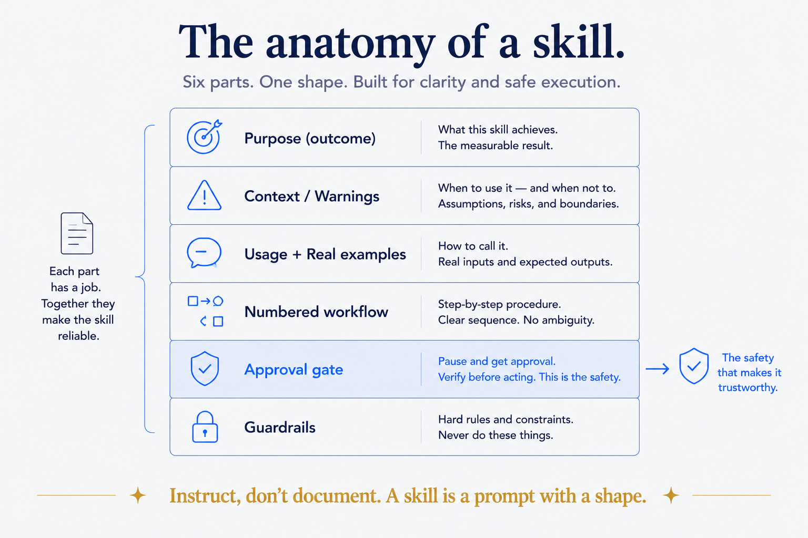
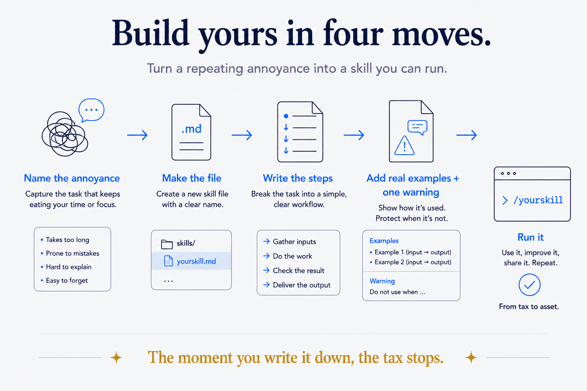

What we're building toward
A skill is a procedure the AI runs on command, the same way every time. In Claude Code, a skill is — and this is almost anticlimactic — a markdown file in a folder. No framework, no build step, no config. A file. That's the whole reason skills are worth doing: the barrier to writing one is a text editor.
There are two forms, and you should know both before you start:
- Single-file: one file at
.claude/skills/<name>.md, invoked as/<name>. Perfect for personal, repo-local skills. This is where you start. - Plugin bundle: a folder with a manifest and one or more skills inside, meant for sharing a skill across projects or with a team. This is where you go later, only for the skills worth distributing.
We're building the first kind. It's the 90% case.
The anatomy (six parts, in order)
Every good skill I've written has the same shape. Here it is as a checklist, then I'll show a real one:
1. A title and a one-line purpose. State the outcome, not the mechanism. "Track tasks and route them into the vault" — not "a tool that uses the filesystem." 2. A context box (optional but powerful). Hard constraints, where the source-of-truth lives, and — critically — ⚠️ warnings about what not to do. This is where "don't use the old path, it's dead" lives. 3. A usage block. How it's invoked, the commands it supports, and two or three real examples using your actual vocabulary. Not foo and bar — your real domains. 4. A workflow. Numbered steps. Each step is an instruction to the AI, phrased as a command. This is the body. 5. Approval gates. Any step that writes, deletes, sends, or publishes says "propose and wait for approval." Read-only steps run free. This is the single most important safety habit. 6. Guardrails. What not to do, when to stop and ask, what's source-of-truth versus derived.
That's the recipe. Everything else is judgment.

A real skill, shown
Here's the skeleton of one of mine — a task-tracker that files reminders into my vault. I've trimmed it to the bones so you can see the shape, not the specifics:
# Remind Skill
Track tasks, questions, and things to remember — routed into the vault
tasks-system. Tasks live as `action_`-captures in day-folders (the source
of truth), surfaced by a dashboard. Tasks with a deadline also get a
calendar event.
> Schema spec: <path to the convention doc>
> ⚠️ The old target paths are DEAD (pre-restructure). Do not resurrect them.
## Usage
/remind [command] [args]
Commands: task, question, subscription, export
Examples:
- /remind task "Call the dentist" due:2026-07-10 domain:health
- /remind task "Request the refund" domain:business
- /remind question "Target retirement age?" domain:finances
## Workflow
1. Parse the command and args.
2. Determine the target day-folder from today's date (calendar spine).
3. Write an `action_` capture with the right frontmatter.
4. If there's a deadline, create the calendar event too.
5. Confirm what was filed and where.Read what's doing the work there. The purpose line states an outcome ("things you'll remember, filed where they belong"). The context box names the source of truth and flags a dead path so the AI never wanders back to it. The examples use real domains — health, business, finances — so the AI learns the shape from authentic cases. And the workflow is just numbered instructions, each one a thing to do.
Notice what's not there: no code, no API wrangling, no cleverness. A skill is a well-organized instruction, not a program. If yours starts to look like software, you're overbuilding it.
Build yours in four moves
Here's the actual procedure. Do it now, with a real annoyance you keep re-explaining to the AI.
1. Name the annoyance. What do you re-explain most? "Summarize this the way I like." "File this where it goes." "Check this against my rules." That recurring thing is your first skill. Give it a one-word name.
2. Create the file. Make .claude/skills/<name>.md in your project (or ~/.claude/skills/<name>.md to have it everywhere). Write the title and the one-line purpose. Just those two lines. That's a working skill already — a thin one, but real.
3. Write the workflow as numbered steps. Pretend you're explaining the procedure to a competent new assistant who will do it forever. Each step is one instruction. Where a step could delete or send something, add "propose and wait for approval."
4. Add two real examples and one warning. Examples using your real vocabulary teach the shape. One ⚠️ warning about the mistake you'd hate — a wrong folder, a dead path, an overwritten section — makes it safe.
Invoke it with /<name>. Watch it run your procedure instead of improvising one. That's the moment the tax stops.

The mistakes I made so you don't have to
- Writing documentation instead of instructions. A skill is a prompt, not a manual. If it reads like it's explaining to a human reader, cut it down to commands for the AI. Instruct; don't describe.
- No approval gates. My early skills happily wrote files without asking. Fine until the day one wrote to the wrong place. Now every destructive or outward-facing step waits for a yes. Non-negotiable.
- Placeholder examples.
foo/barexamples teach the AI nothing about your world. Real domains, real paths, real vocabulary — every time. - Building too big. Start with the thinnest version that works — title plus purpose — and grow it when it misfires. A skill improves in place; you don't need it perfect on day one.
The recipe is yours; the kitchen is the harder part
That's the whole recipe, given freely — because the anatomy of a skill genuinely is this simple, and gatekeeping it would be silly. You can build your first one this afternoon.
Here's the honest line, though, and it's the same one that runs through everything I do. Knowing how to write a skill is the recipe. Building a coherent system of dozens of them — that stand on real structure, connect to real data, and compound instead of collide — is the kitchen. The recipe is a text file. The kitchen is a couple of years of decisions about how everything fits: the conventions the skills rely on, the data sources they read, the structure they file into. That part doesn't come from a template. It comes from designing the whole system to hold together.
So take the recipe and go — build your first skill today, seriously. And when you find yourself with thirty of them and they've started to sprawl, that's the signal you've hit the kitchen: the point where it stops being about individual skills and starts being about the architecture underneath them.
Next in the series: skills versus prompts versus plugins — the map, so you know which tool the moment calls for.